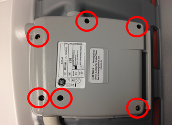
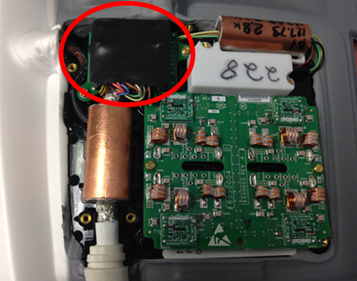
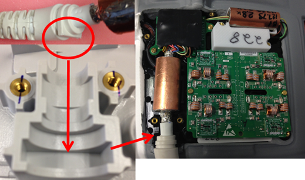
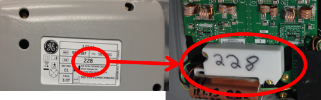

- 00000018WIA3066EE20GYZ
- id_131060015.6
- Jul 25, 2025, 5:15:39 PM
Replacing the PETMR Lower Anterior Array (LAA) and Upper Anterior Array (UAA) Cable
AA cable replacement
Follow this procedure to replace the system cable on the AA Coil. Before beginning this procedure, remove the coil from the magnet room. Wear an ESD wrist strap to avoid electrostatic discharge.
Prerequisites
| Personnel requirements | |||
|---|---|---|---|
| Required persons | Preliminary requirements | Procedure | Finalization |
| 1 | - | 45 minutes | - |
| Tools and test equipment | |||
|---|---|---|---|
| Item | Quantity | Part number | Manufacturer |
| Nonmagnetic Titanium Service Tool Kit, Large Set | 1 | 5112581 | - |
| ESD Strap | 1 | - | - |
| Replacement parts | |||
|---|---|---|---|
| Item | Quantity | Part number | Manufacturer |
| 3.0T PET/MR Upper Anterior Array (UAA) Coil Note Coil only FRU and must be used with 3.0T PET/MR Upper Anterior Array (UAA) Cable (5963964). | 1 | 5963963 | - |
| 3.0T PET/MR Upper Anterior Array (UAA) Cable | 1 | 5963964 | - |
| 3.0T PET/MR Lower Anterior Array (LAA) Coil Note Coil only FRU and must be used with 3.0T PET/MR Lower Anterior Array (LAA) Cable (5963966). | 1 | 5963965 | - |
| 3.0T PET/MR Lower Anterior Array (LAA) Cable | 1 | 5963966 | - |
Procedure
- Remove the six screws securing the cover over the system cable.
Figure 1. Cover and screws 
- Locate the connector of the system cable. Pull up on the connector and remove the system cable from the housing.
Figure 2. Connector 
- Insert new system cable in the housing. Make sure that the flat portion of the strain relief is put in the bottom housing.
Figure 3. Strain relief placement 
- Make sure the serial number on the cover matches the serial number inside the coil. Put the cover on the coil and make sure the wires leading to the system cable connector are not pinched between the housings. Secure the cover to the coil with the screws removed in step 1.
Figure 4. Serial number 
Finalization
Run the MCQA tool following the setup in either the Upper Anterior Array Setup for MCQA Test or the Lower Anterior Array Setup for MCQA Test to check that the AA Coil operates properly.